8月7号，路透社爆了一份猛料：
世界反兴奋剂机构 (WADA) ，和美国反兴奋剂机构（USADA）掐起来了……
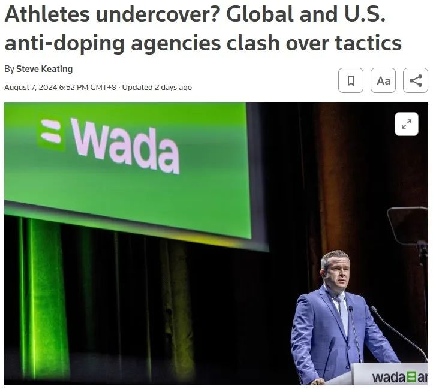
（路透社报道）
据WADA向路透社透露，他们现在了解到2011~2014年间，“至少三位”运动员在严重违反反兴奋剂条例的情况下，仍被USADA允许继续比赛，直至退役；
作为代价，这些运动员成为了USADA的“卧底特工”，秘密搜集证据揭露其他用药的运动员，但USADA和WADA规则中都没有任何条款能允许这样出格的做法；
且在此过程中，USADA并未知会WADA，属于先斩后奏，所以即便现在此事已被曝光，WADA仍无法透露这些运动员的具体身份，因为“担心他们遭到报复”。
在路透社发文后不久，WADA官方发了一篇声明，讲了一具体例子：
“在某一案例中，美国一精英水平的运动员承认服用了类固醇和EPO（一种促进红细胞生成的药物），但却被允许继续参加比赛，直至退役。”
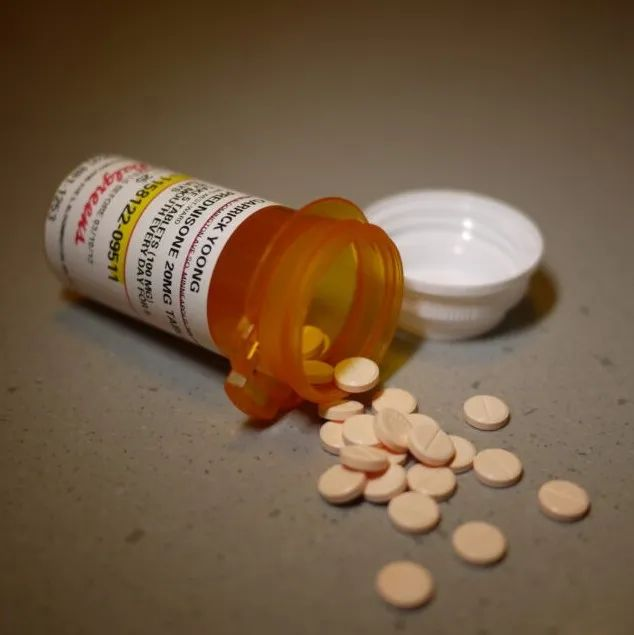
（示意图）
“然而他们的案子始终未公开过，其比赛结果从未取消，奖金从未退还，连禁赛处罚都欠奉。之后该运动员仍被允许与毫不知情的对手同场竞技，就好像他们从未作弊一样。”
“后来USADA终于向WADA承认了真实情况，但他们建议称，一旦公布真实情况或取消比赛结果，该运动员的人身安全都会受到威胁，于是要求WADA同意不公开。”
“面对如此境地，WADA别无选择，只能同意（当然，是在验证所谓‘人身安全’的说法是真实的之后）。于是该运动员服用兴奋剂的情况始终未有公开。”
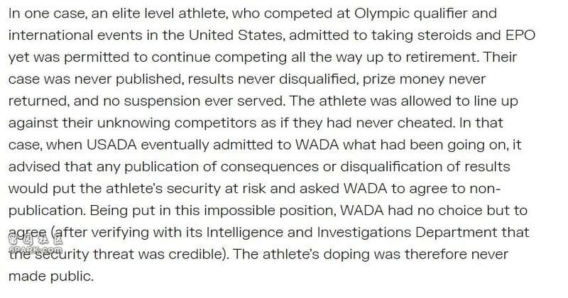
（WADA报告原文）
欺上瞒下，先斩后奏，挟天子以令诸侯，兵法算是被USADA玩明白了。
此事曝出后，路透社联系到了USADA的首席执行官Travis Tygart，后者不仅拒绝透露更多细节，还表示：
“这是解决更大，更系统性问题的有效办法。如果有经纪人，或者其他什么人，瞄准了运动员（进行贩卖）…我认为这种做法是完全合适的。”
（Travis Tygart）
这意思是，他认为利用违规运动员当“卧底”，曝光更有名气的运动员，乃至更上层，更有组织的兴奋剂活动，是正确的。
其实在美国执法领域，转化“污点证人”，让对方做卧底来打掉整个组织的办法，算是个老传统了。
七八十年代美国政府决意打击黑手党的时候，就推出了相应法规以及“证人保护计划”。
举例来说，FBI可以秘密抓捕某个黑手党高层，威逼利诱他交代其他组织成员犯罪证据，继而一网打尽；
作为回报，FBI会将此人作为证人保护起来，给他安排一个假身份，送他去别的地方生活，防止他被报复——著名黑帮片《好家伙》讲的其实就是这么个事…….
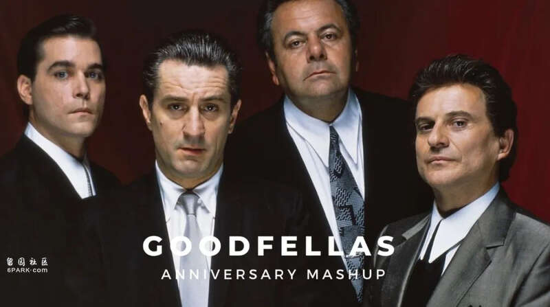
（《好家伙》剧照）
过了几十年，USADA用的似乎还是类似的手段。两件事的内核也差不多：
以某些“污点证人”逍遥法外为代价来尝试打掉整个犯罪组织，看起来似乎是一笔合算的买卖，但我们是否应该容许法律被这种“买卖”所玷污？这真的是一种“必要之恶”吗？
就算抛去这些形而上的问题不谈——对那些没有用药的清白运动员来说，这公平吗？
这最关键的问题，似乎却并不在USADA考虑之内。
Tygart向路透社表示，鉴于WADA的态度，他们今后将不再使用这种做法，但也批评说WADA的姿态是“反‘清净体育’的”，自觉“污点证人”的做法完全合规……
双方的矛盾，现下已摆到了明面上。
其实从USADA各种隐瞒不报的操作也能看出，双方的矛盾由来已久，只不过是最近爆发了而已。
早在今年5月1号，USADA就曾发长文炮轰WADA，指责WADA的调查是“有缺陷的（flawed）”，是“半真半假”、“自私自利”的。
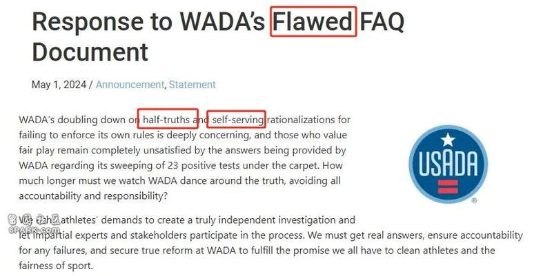
（USADA指责WADA）
在这篇长文里，USADA逐段逐行、逐句逐字地解析了一篇WADA的报告，试图指出WADA报告中的错漏，可谓将“科学”、“严谨”发挥到了极致。
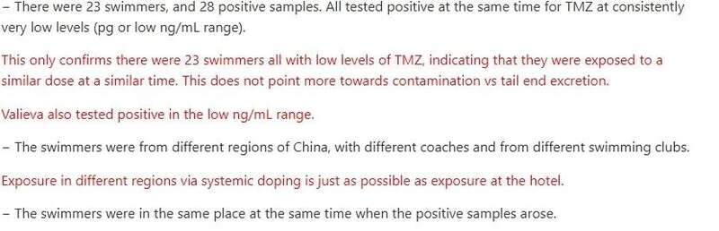
（黑色是WADA原报道，红色是USADA的解析与反驳）
但对于美国运动员自己，这份“严谨”又似乎突然消失了。
如今年3月26日，美国运动员Erriyon Knighton在药检中查出类固醇阳性，事后宣称是因为食用了某某面包店的牛尾…….
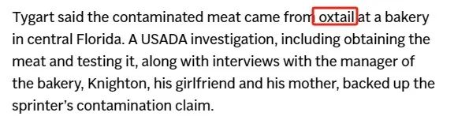
（“牛尾”污染）
USADA调查了牛肉，采访了面包店经理，Knighton本人以及他的女友和母亲——都是他的“自己人”——便决定是牛尾“导致的污染”，决定不对其实施禁赛处罚。
然后他就好端端地参加奥运预选赛去了……
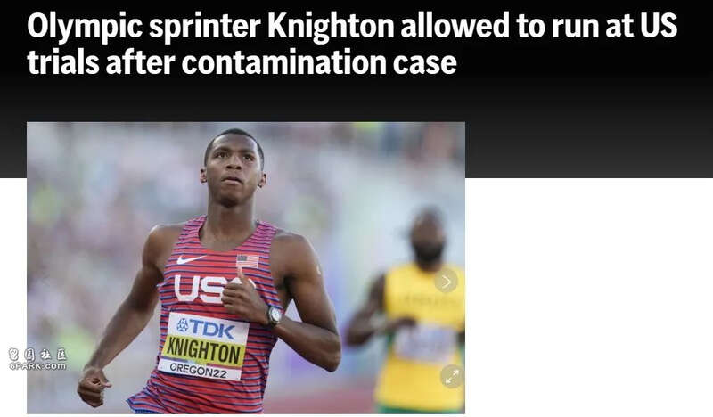
（相关报道）
又比如运动员Aldrich Bailey。
今年4月，他查出奥斯他林（Ostarine）阳性，这是一种选择性雄激素受体调节剂，未获得FDA批准，且被WADA禁止使用。
（Aldrich Bailey）
事后，USADA认定是Bailey用的氯丁橡胶绑腿“污染”所致，但其实奥斯他林并非常见的污染物，绑腿缘何能导致药检阳性，同样也是未解之谜。
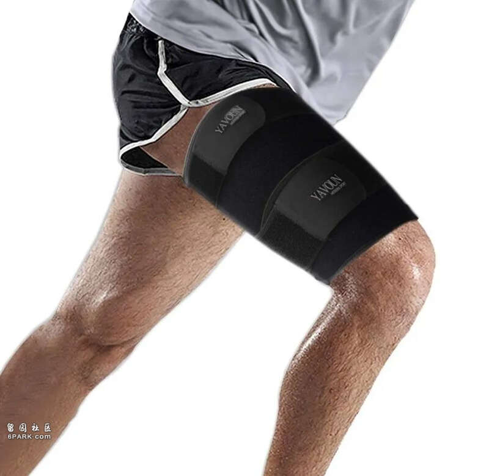
（绑腿）
最离谱的是美国花样游泳运动员Calista Liu的例子。
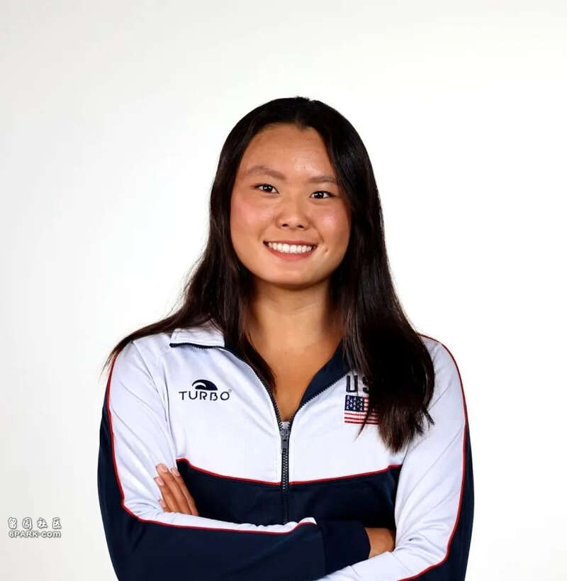
（Calista Liu）
今年5月13日，Calista Liu查出了多佐胺(Dorzolamide）阳性，这种药物本来是用于治疗青光眼的，多出现在眼药水当中，其本身并无兴奋作用，但全身给药时会有利尿效果，可以作为兴奋剂的“遮掩剂”，也属于WADA规定的禁药。
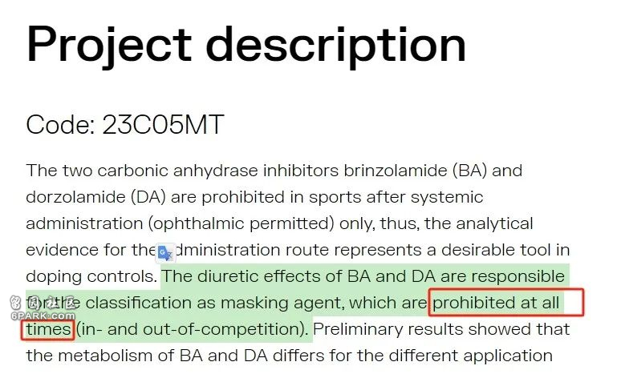
（WADA关于多佐胺的规定：全面禁止）
而之所以查出多佐胺阳性，Calista Liu的解释是：她虽然已经不再和父亲一起住，但过去两年内还是会定期回来看望父亲，而他父亲会用多佐胺眼药水。
在聊天期间，她可能会接触到父亲的枕头和床单，俩人聊开心了，Liu时常会狂笑，把脸埋进枕头里，继而导致了多佐胺阳性……..
很离谱吧？
但这说法出自USADA出具的官方报告，以上全部是报告原文翻译而来…….
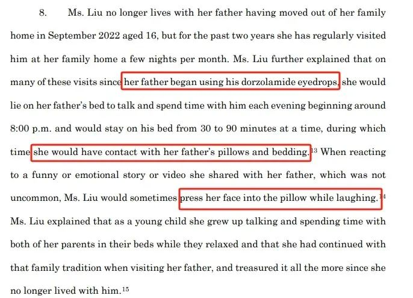
（USADA报告原文）
更离谱的是Liu就这样正常参加了巴黎奥运，还在斩获了一枚花样游泳银牌…….
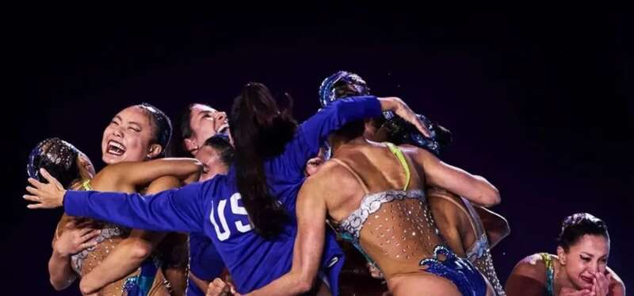
（美国花游队夺银）
大约与此同时，开头提到的路透社的报道，包括WADA对USADA的声明也出来了，后者的双标暴露无遗——
怎么对“自己人”，就没有那种逐字逐句的严谨呢？
回头再看USADA所谓“污点证人”的做法，只能说越看越离谱。
如果什么都可以用“保护运动员安全”的理由不公开，那岂不是谁查出来阳性都可以轻轻放过，然后送他去做“卧底”……
这不就成万能挡箭牌了？
所以也难怪WADA在声明末段很直白地批评道：
“其他运动员若知道自己在和作弊者竞争，该是什么感受？USADA总是怀疑其他反兴奋剂组织未有严格遵循规定，但它自己却多年不公开真实情况，允许作弊者继续参赛，这是何等的讽刺和虚伪？”
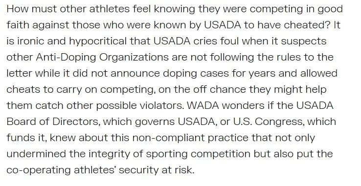
（WADA报告原文）
如果此等双标也能算“必要之恶”，那干脆，还是别恶着好……
ref:
https://www.reuters.com/sports/athletes-undercover-global-us-anti-doping-agencies-clash-over-tactics-2024-08-07/